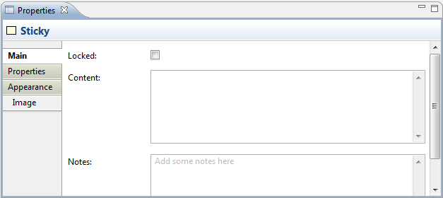
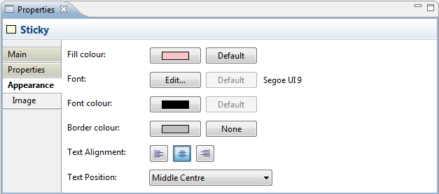
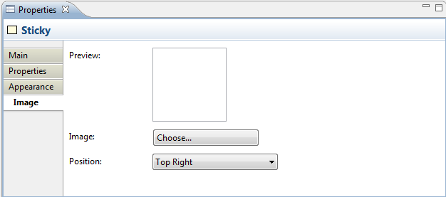

A Sticky object can contain text and an icon. You can lock the Sticky if you want to make it read-only. There are a number of ready-coloured Stickies available in the Palette, but you can always change the colour in the Properties window.
Properties
Selecting a Sticky in a Canvas View means that you can edit or view the following properties in the Properties window.
The Main Tab
| Locked: | Ticking this ensures that the Sticky cannot be moved or edited. |
| Content: | A space to enter some text content for the Sticky. The text will show up in the Sticky. |
| Notes: | A space to enter some text notes for the Sticky. Any notes will appear in the tooltip for the Sticky. |

Main Properties for a Canvas Sticky
The Properties Tab
For more information about creating and managing User Properties see User Properties.
The Appearance Tab
| Fill colour: | Specifies the fill colour for the selected element. The "Default" button sets the fill colour to the default setting. |
| Font: | Specifies the font used for the text in the selected element. The "Default" button sets the font to the default setting as set in Preferences. |
| Font colour: | Specifies the colour of the font used for the text in the selected element. The "Default" button sets the fill colour to the default setting. |
| Border colour: | Specifies the colour of the border used for the selected element. The "None" button removes the border from the element. |
| Text Alignment: | Aligns text in the selected element to Left, Centred or Right relative to the paragraph. |
| Text Position: | Positions text in the selected element to relative to the element. |

Appearance Properties for a Canvas Sticky
The Image Tab
| Preview: | A preview image that shows how the image will appear. Images are resized to a maximum width and height of 100 pixels. Double-clicking the Preview box will launch the Image Chooser dialog window. You can also drag and drop an image file from the desktop onto the Preview box. |
| Image: | Select an image for the element or clear the image. See "Adding Images to Elements" for more details |
| Position: | Sets the position of the image relative to the element. |

Image Properties for a Canvas Sticky